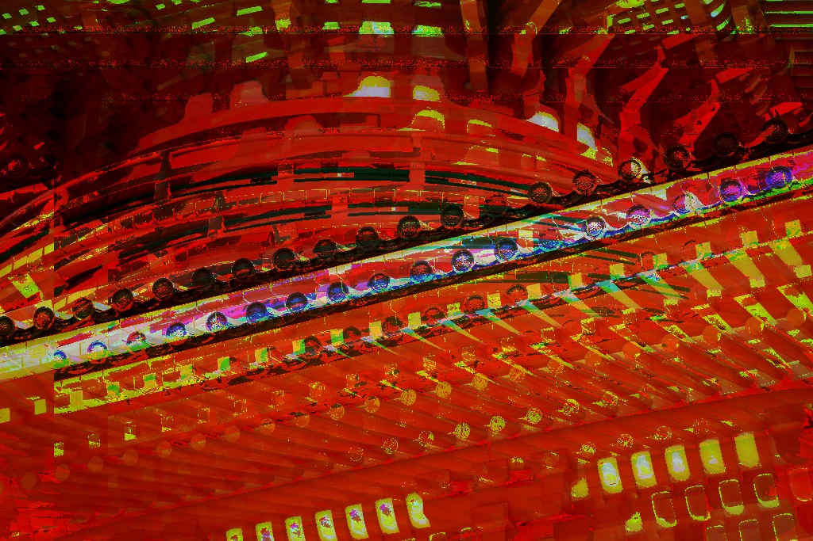
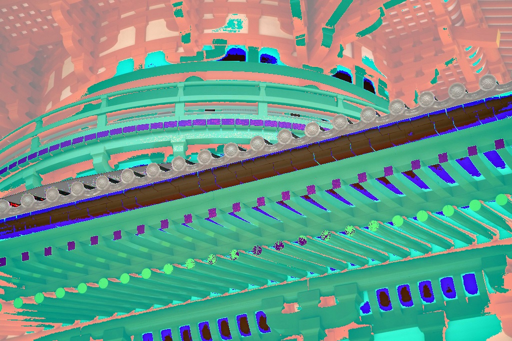
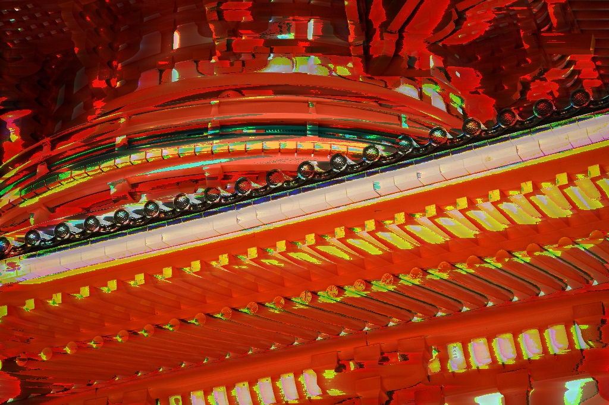
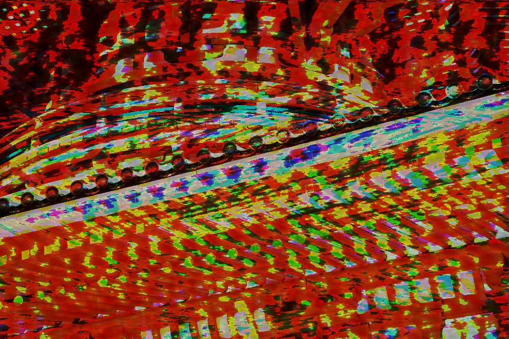

FX Library.
Here you will find a small selection of Audacity effects and their appearance when applied to an image. Keep in mind that results may vary depending on the image and on the order that previous and subsequent effects are applied.
| Effect | Result |
|---|---|
| Original Image © 2010 Chi King |
|
| Amplify (+25 db) |
|
| Amplify (-25 db) |
|
| Echo (1 sec) |
 |
| Invert |  |
| Notch Filter (490hz) |
 |
| Reverb |  |